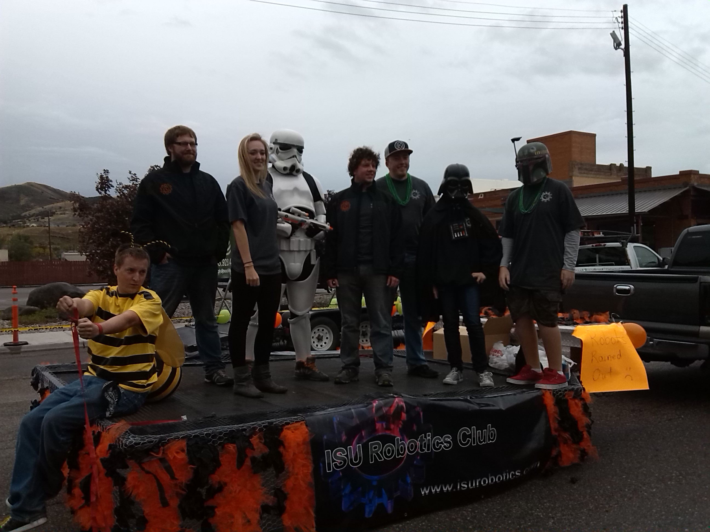

Upcoming Events
September 1st: Leader meeting
12:30 in the upstairs lab
September 6th: Meeting in T&T
318 at 12:30
Who we are
The Idaho State University Robotics Club is a group of ISU students who enjoy technology and meet together weekly to build cool things, sharpen skills, and make contact with industries to find career opportunities. Some of the skills that are commonly used/learned are: Electronic design, radio frequency, soldering, electrical, programing, motor control, troubleshooting, metalwork, mechanical, decorating, welding, and drafting. The club is affiliated with and supported in part by the "Robotics & Communication Systems Engineering Technology" program (RCET) and is open to any ISU student who is interested in learning about and building robots or who wishes to improve the club with their skills. The Club is registered with ASISU.
What we do
"Now is the perfect time to join robotics club! we're just starting out for the year, which means we'll be doing simple, easy to understand projects. Anyone who is interested in learning the basics of robotics is more than welcome to attend! Our projects right now mostly have to do with Arduinos, which are prebuilt, programmable circuit boards. We're planning on creating a sound-activated plasma ball and a computer-controlled marble maze."